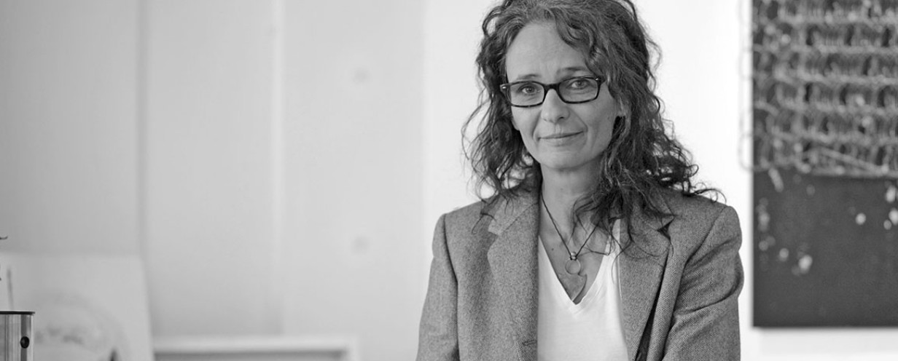
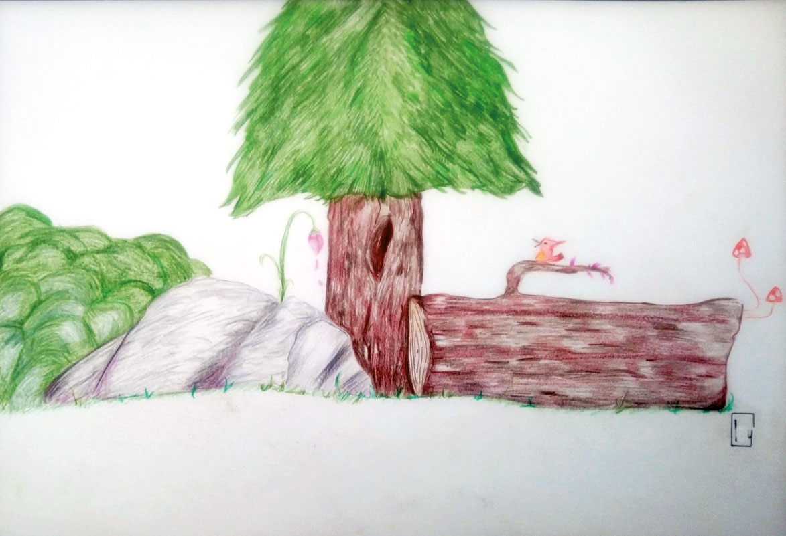

Auszeit am frühen Abend
Feierabend-Atmosphäre, Tee, Ankommen und begleitetes Gestalten mit Farbe, Collage oder Ton.
Für Privatpersonen · 90 Minuten
atelier
Ressourcenorientierte, visuelle Methoden, um innere Themen wahrzunehmen, ihnen Ausdruck zu geben und neue Perspektiven entstehen zu lassen. Ein geschützter Raum – ganz ohne „schön malen müssen“.


Wir tragen bewusste und unbewusste Themen in uns.
Bilder spiegeln, was uns bewegt, blockiert oder stärkt.
Kreative Lösungen schaffen Distanz, Nähe und Leichtigkeit.
Ein Perspektivwechsel hilft, den eigenen Weg klarer zu gehen.
Ein Atelier-Raum ohne Leistungsdruck: ausprobieren, verwerfen, weiterdenken und dem eigenen Ausdruck Schritt für Schritt begegnen.


Als psychosoziale und klinische Kunsttherapeutin und Heilpraktikerin für Psychotherapie begleite ich Menschen in herausfordernden Situationen – mit Erfahrung aus Praxis, Klinik, Palliation und Psychoonkologie.
Kunst ist für mich ein existenzieller Freiraum. Natur, Material und die eigene Wahrnehmung werden zu Kraftquellen, aus denen neue Handlungsspielräume wachsen.
Einzelne Sitzungen, Gruppen und kreative Teamformate – angepasst an Thema, Ziel und den geschützten Rahmen, den es dafür braucht.
Feierabend-Atmosphäre, Tee, Ankommen und begleitetes Gestalten mit Farbe, Collage oder Ton.
Für Privatpersonen · 90 Minuten
Krankheitsakzeptanz, Integration, Resilienzförderung und neue Perspektiven in einem geschützten Rahmen.
4–12 Personen · 90 Min × 4 Einheiten
Ein gemeinsames Kunstwerk, spielerische Regeln, Zusammenarbeit ohne Perfektionsdruck – verbindend und stärkend.
Für Teams & Gruppen · nach Bedarf
Zieh Linien, setz Punkte, spiel mit Farbe. Es geht nicht um richtig oder falsch – sondern ums Entdecken.
Adresse
Otto-Stadler-Straße 23c
33102 Paderborn
Dienstag
Vormittag
Tonarbeiten / Gruppen
Donnerstag
Früher Abend
Auszeit / Kurse / Gruppen
Details & freie Plätze gern über das Kontaktformular anfragen.
In einem unverbindlichen Erstgespräch lernen wir uns kennen und finden heraus, welches Format zu dir und deinem Thema passt.